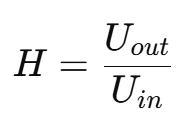
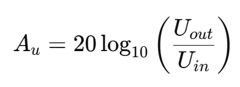

Teorie
Napěťový přenos a přechodová (přenosová) funkce patří mezi základní pojmy při analýze elektrických obvodů a filtrů. Umožňují popsat, jak se vstupní napětí mění na výstupu obvodu v závislosti na frekvenci nebo čase.
Napěťový přenos udává poměr mezi výstupním napětím 𝑈𝑜𝑢𝑡 a vstupním napětím 𝑈𝑖𝑛 Značí se nejčastěji symbolem 𝐻 a lze jej vyjádřit vztahem: 
Napěťový přenos může být vyjádřen jako bezrozměrná veličina nebo v decibelech (dB). Vyjádření v decibelech je výhodné zejména při zobrazování frekvenčních charakteristik:
Napěťový přenos může být vyjádřen jako bezrozměrná veličina nebo v decibelech (dB). Vyjádření v decibelech je výhodné zejména při zobrazování frekvenčních charakteristik:
Přenosová funkce umožňuje:
- analyzovat chování obvodu při různých frekvencích
- určit mezní frekvenci filtru
- sestrojit amplitudovou a fázovou charakteristiku
- porovnávat vlastnosti různých filtrů